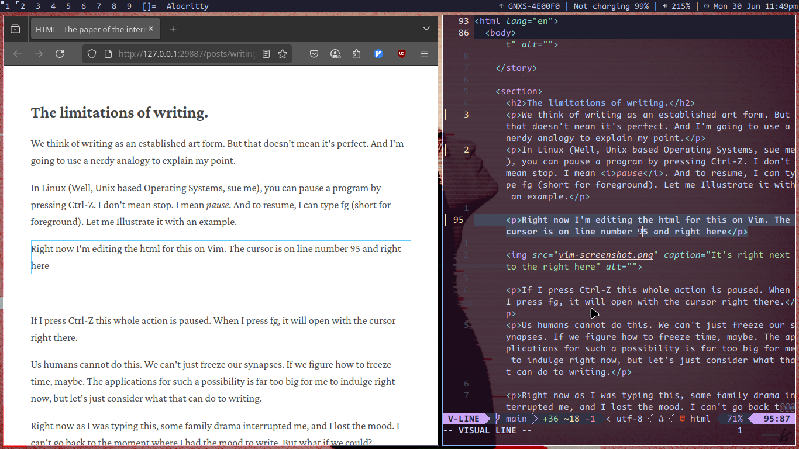

Nothing beats writing on paper. I've heard that before.
I don't know if it's nostalgia, but that that sentiment feels convincing. Does that make it true?
Is writing on paper better?
What you see is what you get.
On paper, every scratch shows. Want to make it pretty? You can't just select text, go to the fonts section and change it. You'll have to write it yourself. And don't even get me started on undo.
You write as quick as you can write. Maybe.
Okay, so this maybe because my computer that came out during the stone age. Most modern computers don't lag. Why is that? Maybe it could be because...
Paper is more reliable...and cheap.
That's right. Computers age. Your old pentium
laptop running Windows 98 won't open
Microsoft Word 2025 and type out your document without
complaining. But that stack of paper you bought
right after your first breakup? Well it's a
little yellow but it's still fine for your
first draft. Want a stack of new sheets? All you
have to do is go down the road, and hand over your
spare change.
See where I'm getting at?
So, are digital tools actually that bad?
Okay, so I know I sound like a boomer but for some goshdarn reason words flow out of my hand when I use a piece of paper compared to when I use google docs.
But that's because I grew up with pen and paper. My future kids would have the same reverence for penmanship as an artform, as I do for cave paintings.
When I started my writing career, I had so much writer's block, I couldn't breathe. And it was pretty ironic too, as I used to write without thinking when I wasn't paid to do it.
That's when I realised something. My DMs were
waay more creative than the stuff I wrote on
Google Docs.
Does that mean WhatsApp is the most superior form of writing? Of course not. It was just something that I'm comfortable with.
But wait. What if were were the prodigal cavemen all along?
The limitations of writing.
We think of writing as an established art form. But that doesn't mean it's perfect. And I'm going to use a nerdy analogy to explain my point.
In Linux (Well, Unix based Operating Systems, sue me), you can pause a program by pressing Ctrl-Z. I don't mean stop. I mean pause. And to resume, I can type fg (short for foreground). Let me Illustrate it with an example.
Right now I'm editing the html for this on Vim. The cursor is on line number 95 and right here

See the block of text that's selected? That's what I'm editing.
Us humans cannot do this. We can't just freeze our synapses. If we figure how to freeze time, maybe. The applications for such a possibility is far too big for me to indulge right now, but let's just consider what that can do to writing.
Now if I press the shortcut for pause, the entire program pauses. And I don't mean exit. I mean pause. Once I'm done doing other things on the computer, I can resume, and the cursor will be waiting for me on the same line, just the way I left it.
What if we could do this while writing? Pause and resume in the exact same mood as we left it? Or better yet, go back to the mood where I didn't have writers block?
That would be sick.
Unfortunately, the universe isn't that generous. Here's something equally annoying.
Writing mode, and editing mode.
Usually, when I'm writing something, there are far more things that go on my head other than just the words I type.
Did I use the right word?
Is there a way I can make this phrase better?
How does this contribute to the overall narrative?
So many things. How to make it stop?
One way is to reframe your mindset. You're either writing or you're editing. Don't edit while you write. Let the mistakes happen. Once you're done writing, you can resume being your worst critic.
Easier said than done on a computer. There's nothing more tempting than pressing that backspace key to do a quick edit. But on paper, you can't. Mistakes are mistakes. And you have the luxury of letting them be, till you correct them on the next draft.
HTML as the rough draft.
Let's look at that image again.
Why does HTML have to look so ugly?
Look at the preview on the left, it's so pretty, isn't it? Definitely compared to the ugly HTML code on the left. With all the weird colours and symbols and letters that get cut off in between. You know what that reminds me of?
A first draft. On paper.
That's right. It's messy. Just like your terrible
handwriting on your first paper draft. Because you can make mistakes freeely when the output looks this ugly. And that's why it's
beautiful.
And that's why HTML is like paper, for the internet.